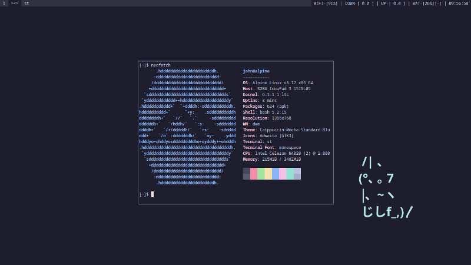

Projetos
Aqui eu guardo o meu setup do Labwc, um compositor Wayland. Ele é o meu setup atual, porém eu não fiz o upload de todas as minhas modificações nele, pelo menos por enquanto.
Esse repositório se trata de um setup com múltiplas paletas de cores, sendo elas: Solarized Dark/Light, Rosé Pine e Nord. Todo o ambiente gira em torno de utilitários e programas que feitos pela equipe Suckless ou simpatizantes.